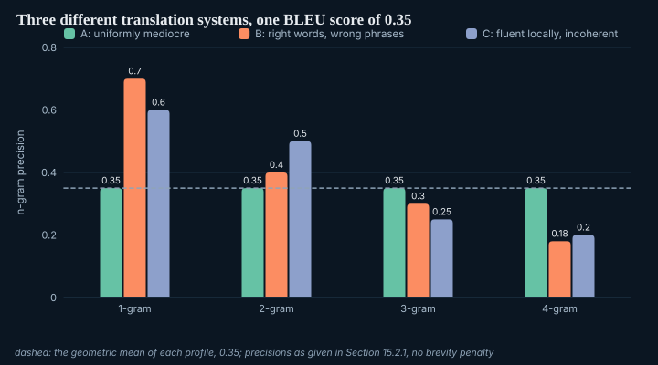

Chapter 15: Scalar Irrecoverability in Communication
Part VI: Communication Failure
“Essentially, all models are wrong, but some are useful.” — George E. P. Box
THE ROSETTA TRAJECTORY
Chapter 14 catalogued how communication breaks — the four failure modes that distort interpretation, hijack objectives, trap understanding, and shatter gauge invariance. This chapter addresses a different kind of failure: not the failure of communication itself, but the failure of how we measure communication. Every scalar metric used in communication science — BLEU, perplexity, word error rate, sentiment polarity, engagement score — destroys geometric structure that it claims to evaluate. The destruction is not approximate. It is not gradual. It is total, and it is irrecoverable.
We introduced this problem in Chapter 1 with the vodka translation. We formalized the manifold whose structure is at risk in Chapter 3. We demonstrated what geometry can recover in Chapters 4–13. Now we prove the theorem: for any scalar evaluation of a communicative act, the preimage of that scalar contains communicative acts that differ along every dimension the scalar discards. No post-hoc procedure can recover the lost dimensions. The compression is a one-way function.
This is the communication-specific form of the Scalar Irrecoverability Theorem (Geometric Reasoning, Ch. 13; the level-set form below is that of Geometric Ethics, Theorem 15.1). It is the most important negative result in this book, because it delimits what no amount of better data, better models, or better algorithms can achieve within the scalar paradigm. To recover the geometry of meaning, you must measure the geometry of meaning. There is no shortcut through scalars.
15.1 The Problem, Precisely Stated
In Chapter 1, we surveyed the scalar menagerie — BLEU, perplexity, WER, classification accuracy, sentiment scores — and catalogued, informally, what each metric destroys. In Chapter 3, we constructed the communication manifold $M = S \times P \times C$ and showed that scalar evaluation is a projection $\pi: M \to \mathbb{R}$ that discards the manifold structure. Now we make this precise.
Theorem 15.1 (Scalar Irrecoverability for Communication). Let $M = S \times P \times C$ be the communication manifold with metric $g$ and gauge group $G = T \times R \times F$. Let $\phi: M \to \mathbb{R}$ be any smooth scalar evaluation. Then:
- For any regular value $r \in \text{range}(\phi)$, the level set $\phi^{-1}(r)$ is a submanifold of $M$ of codimension 1 — that is, it has dimension $\dim(M) - 1$.
- No function $\psi: \mathbb{R} \to M$ can invert $\phi$ — there is no way to recover the point on $M$ from its scalar image.
- The level set $\phi^{-1}(r)$ generically intersects every fiber of the product structure — that is, for generic $\phi$, the set of communicative acts with the same scalar score includes acts that differ in signal, pragmatics, and content simultaneously.
The information loss is total in the discarded dimensions and is not recoverable by any post-hoc processing of the scalar value alone.
The proof follows directly from the dimension count. The communication manifold $M$ has dimension $\dim(S) + \dim(P) + \dim(C)$. For the empirical systems studied in this book:
- Whale codas (Chapter 7): $\dim(S) \geq 20$ (ICI vector + spectral features), $\dim(P) \geq 3$ (social context), $\dim(C) \geq 5$ (coda type taxonomy).
- Birdsong (Chapter 8): $\dim(S) = 156$ (the geometric feature vector), $\dim(P) \geq 2$ (territorial/mating context), $\dim(C) \geq 1$ (species identity).
- Moral judgment (Chapters 11–14): $\dim(S) \geq 10$ (text features), $\dim(P) \geq 4$ (social relation, formality, power, context), $\dim(C) = 7$ (the harm vector) or $\dim(C) = 4$ (the Hohfeldian quartet).
In every case, $\dim(M) \gg 1$. A scalar evaluation compresses at least 20 dimensions — and often 150 or more — to a single number. The level set $\phi^{-1}(r)$ has dimension $\dim(M) - 1$, which means it is essentially as large as $M$ itself. Knowing the scalar value eliminates exactly one degree of freedom and leaves all others undetermined.
15.2 The BLEU Decomposition
15.2.1 One Number, Four Quality Profiles
Consider a machine translation system that achieves a BLEU score of 0.35 on a test set. What does this number tell us?
From the formula (Chapter 1, Section 1.2.1):
$$\text{BLEU} = \text{BP} \cdot \exp\left(\sum_{n=1}^{N} w_n \log p_n\right)$$
the score is a geometric mean of modified $n$-gram precisions, weighted uniformly and penalized for brevity. A score of 0.35 is consistent with at least four qualitatively different quality profiles:
Profile A: Uniformly mediocre. Each $n$-gram precision $p_n$ is approximately 0.35, meaning that about a third of the unigrams, bigrams, trigrams, and 4-grams in the translation appear in the reference. The translation captures some of the vocabulary and some of the local phrase structure, but misses two-thirds of both. This is a system that has a general sense of what the source says but cannot reliably reproduce it.
Profile B: Lexically accurate, structurally wrong. The unigram precision $p_1$ is high (say, 0.70 — most of the right words are present), but the bigram and higher precisions drop sharply ($p_2 = 0.40$, $p_3 = 0.30$, $p_4 = 0.18$). The geometric mean $\exp(0.25 \times (\log 0.70 + \log 0.40 + \log 0.30 + \log 0.18)) \approx 0.35$, with no brevity penalty. This is a system that knows the vocabulary but cannot construct phrases — a bag-of-words translator with a post-hoc ordering step.
Profile C: Locally fluent, globally incoherent. The short $n$-gram precisions are high ($p_1 = 0.60$, $p_2 = 0.50$) but the long $n$-gram precisions are low ($p_3 = 0.25$, $p_4 = 0.20$). The system produces fluent bigrams and trigrams — natural-sounding local sequences — but the sentences do not cohere at the clause level. The geometric mean works out to approximately 0.35, with no brevity penalty. This is the failure mode of early neural MT: locally fluent, globally confused.
Profile D: Semantically faithful, stylistically alien. The translation captures the meaning of every sentence but uses unnatural phrasing, calques, and non-idiomatic constructions. Because BLEU measures surface overlap, the unigram precision is moderate (the right concepts are present but expressed with unusual word choices), and the higher $n$-gram precisions are low (the phrase structures are non-native). A human evaluator would rate this translation as “accurate but awkward” — high adequacy, low fluency. BLEU sees only the low fluency.
These four profiles produce the same scalar. A BLEU score of 0.35 is a contraction of a quality tensor with at least four independent dimensions — adequacy, fluency, terminology, and style — and the contraction discards three of them. The information is not merely compressed; it is destroyed. No amount of staring at the number 0.35 will tell you which profile produced it.

Figure 15.1. Three of the quality profiles of Section 15.2.1, with the n-gram precisions the chapter gives; the bars are the precisions for word sequences of length 1 to 4. BLEU without a brevity penalty is their geometric mean, and for all three profiles it is 0.35 (0.350, 0.351 and 0.350). The score is the dashed line; the shape of the bars, which is what tells the three systems apart, is what the score leaves out. Profile D is described in words only and is not drawn.
15.2.2 The Quality Tensor
To make this formal, define the translation quality tensor as a point in $\mathbb{R}^k$ where $k \geq 4$:
$$\mathbf{q} = (q_{\text{adequacy}}, q_{\text{fluency}}, q_{\text{terminology}}, q_{\text{style}}, \ldots) \in \mathbb{R}^k$$
BLEU is a function $\phi_{\text{BLEU}}: \mathbb{R}^k \to \mathbb{R}$ that contracts this tensor to a scalar. The level set $\phi_{\text{BLEU}}^{-1}(0.35)$ is a $(k-1)$-dimensional surface in $\mathbb{R}^k$. Profiles A through D are four distinct points on this surface, each with a different quality structure, each invisible to the scalar.
Proposition 15.1 (BLEU Level Set Diversity). For $k \geq 4$ independent quality dimensions, the level set $\phi_{\text{BLEU}}^{-1}(r)$ for any $r \in (0, 1)$ contains points that are maximally separated on any $(k-1)$-dimensional subspace of the quality space. That is, two translations with the same BLEU score can be maximally different on every quality dimension except the one that BLEU explicitly measures (surface $n$-gram overlap).
This is not a theoretical curiosity. It is the daily operating condition of every MT evaluation that reports BLEU scores. When a paper reports “our system achieves BLEU = 0.35 on WMT-2024,” the reader does not know whether the system is uniformly mediocre (Profile A), lexically accurate but structurally broken (Profile B), locally fluent but globally incoherent (Profile C), or semantically faithful but stylistically alien (Profile D). The scalar has destroyed the diagnostic information that would distinguish these radically different systems.
15.2.3 The chrF++ Mirage
One might hope that adding a second metric would recover the lost information. chrF++ (character $n$-gram F-score) correlates with BLEU at $r \approx 0.85$–$0.95$ on most language pairs — high enough that the second metric provides little independent information, low enough that the occasional disagreement is tantalizing.1 But adding a second scalar produces a point in $\mathbb{R}^2$, which has codimension $k - 2$ in the quality space. For $k \geq 4$, this still leaves at least two quality dimensions unconstrained. Two scalars are better than one, but the level set in $\mathbb{R}^2$ still contains translations that differ qualitatively on the uncaptured dimensions.
The general principle: $n$ scalar metrics constrain $n$ of the $k$ quality dimensions, leaving $k - n$ unconstrained. To fully determine the quality tensor requires $k$ independent metrics — one per dimension. Since $k \geq 4$ for translation and much larger for general communication (the full manifold $M$ has $\dim(M) \gg 4$), the scalar approach requires impractically many metrics, each measuring a genuinely independent quality dimension. And even then, the metric set would be evaluating quality in a fixed coordinate system rather than on the intrinsic manifold — a representation-dependent assessment rather than a geometric one.
15.3 The Sentiment Trap
15.3.1 One Dimension for a Multi-Dimensional Object
Sentiment analysis reduces text to a scalar — positive, negative, neutral — or, in its more sophisticated forms, to a point on a one-dimensional valence axis from $-1$ (maximally negative) to $+1$ (maximally positive). This is the most aggressive scalar compression in common use, and it destroys the most information.
What does a sentiment score of $+0.7$ mean? Consider three texts, each plausibly scored at $+0.7$:
Text 1: “I’m thrilled about the promotion! The team has been amazing, and I can’t wait to start the new role.”
Text 2: “The surgery went well, thank God. We were so scared, but the doctors say the prognosis is excellent now.”
Text 3: “Honestly, your presentation was quite good. I mean, for someone with your background, it was really impressive.”
All three are “positive.” All three might score near $+0.7$ on standard sentiment classifiers. But they occupy radically different regions of the communication manifold:
-
Object of sentiment: Text 1 is positive about a career event. Text 2 is positive about a medical outcome. Text 3 is ostensibly positive about a presentation but carries a condescending subtext. The scalar discards the object entirely.
-
Intensity profile across dimensions: Text 1 is uniformly positive — high excitement, high gratitude, high anticipation. Text 2 is positive with a strong relief component and residual anxiety (“we were so scared”). The intensity is not uniform; it is a vector with positive and negative components that partially cancel. Text 3 is low-positive on the surface, negative on the subtext. The valence axis collapses this multi-dimensional profile to a single number.
-
Pragmatic force: Text 1 is a sincere expression of joy. Text 2 is a sincere expression of relief. Text 3 is a backhanded compliment — the pragmatic force is negative despite the positive surface. The sentiment score cannot distinguish sincerity from sarcasm, relief from excitement, or genuine praise from veiled condescension.
-
Social context: Text 1 addresses peers. Text 2 addresses family or close friends. Text 3 addresses a subordinate or someone of perceived lower status. The social relation between speaker and hearer — the $P$ coordinates on the communication manifold — is invisible to the sentiment scalar.
15.3.2 The Four Destructions
Formally, the sentiment function $\phi_{\text{sent}}: M \to [-1, +1]$ destroys four distinct structures:
1. Object structure. The content manifold $C$ encodes what the sentiment is about. Sentiment analysis projects $C$ onto its valence component, discarding the topical component. A content moderation system built on sentiment scores cannot distinguish “I love this product” (positive about a product) from “I love seeing my enemies fail” (positive about harm). Both score positive. The object is discarded.
2. Intensity decomposition. Affect is not one-dimensional. The circumplex model of emotion (Russell, 1980) requires at least two dimensions (valence and arousal).2 The PAD model (Mehrabian, 1996) requires three (pleasure, arousal, dominance). The discrete emotion theories (Ekman, Plutchik) require five to eight orthogonal dimensions. Collapsing any of these to a single valence axis discards the arousal, dominance, and categorical structure that determine the character of the affect, not just its sign.
3. Pragmatic force. The same surface sentiment can serve opposite pragmatic functions. “Great, just great” spoken with a flat tone is negative despite the positive lexicon. “You’re killing it” is positive despite the violent metaphor. Irony, sarcasm, understatement, and hyperbole all invert or modulate the relationship between surface sentiment and pragmatic force. The sentiment scalar measures surface form; pragmatic force lives on the pragmatic manifold $P$, which the scalar does not access.
4. Contextual dependence. Sentiment is not a property of text in isolation. It is a relation between text and context. “The operation was a success” is positive in a medical context and potentially ironic in a military context (“the operation was a success, but the patient died”). The same text has different sentiment when preceded by different discourse. Context is a coordinate on $P$, and the sentiment scalar evaluates without it.
15.3.3 The Content Moderation Failure
Every content moderation system built on scalar sentiment inherits these losses. A system that flags “negative sentiment” as potentially toxic cannot distinguish:
- Legitimate criticism: “This policy is harmful and should be reversed.” (Negative sentiment, constructive pragmatic force.)
- Grief: “I miss my father so much. The house feels empty without him.” (Negative sentiment, no toxic content.)
- Abuse: “You are worthless and nobody will ever love you.” (Negative sentiment, directly harmful.)
- Sarcasm: “Oh sure, because that worked out great last time.” (Negative pragmatic force, potentially positive surface sentiment.)
These four texts occupy completely different regions of the communication manifold — different content (policy, grief, personal attack, past failure), different pragmatic force (constructive, expressive, harmful, ironic), different social context (public discourse, private mourning, interpersonal abuse, casual conversation). A scalar sentiment score maps all four to “negative” and treats them as equivalent. The moderation system that acts on this scalar will either over-flag (treating grief and criticism as abuse) or under-flag (treating sarcastic abuse as benign because the surface is positive), depending on the threshold. There is no threshold that correctly handles all four cases, because the information needed to distinguish them has been destroyed by the scalar projection.
This is not a limitation of current sentiment analysis technology. It is a mathematical consequence of the Scalar Irrecoverability Theorem. The information is in the manifold coordinates that the scalar discards. No improvement in the sentiment classifier — no better training data, no larger model, no more sophisticated architecture — can recover information that was destroyed by the projection. The fix is not a better scalar. It is a richer representation.
15.4 What Geometry Recovers
15.4.1 The 156-Dimensional Feature Vector
The eris-ketos cetacean analysis (Chapter 7) and the BirdCLEF geometric pipeline (Chapter 8) demonstrate what a geometric representation recovers. The 156-dimensional feature vector for birdsong — 136 SPD manifold features (spectral covariance on $\text{SPD}(16)$), 4 trajectory features (geodesic deviation on the spectral manifold), and 16 TDA features (topological persistence of waveform attractors) — is not a scalar summary. It is a set of coordinates on the signal manifold $S$.
What do these coordinates preserve that scalar evaluation destroys?
Cross-frequency correlations (SPD features). The $16 \times 16$ spectral covariance matrix captures which frequency bands co-vary in a vocalization. This is the “vowel space” of the communication signal — the correlation structure that distinguishes one species’ spectral signature from another’s. The log-Euclidean metric on $\text{SPD}(16)$ measures distance between spectral structures in a way that respects the manifold geometry. A scalar summary of spectral content (e.g., peak frequency, bandwidth) discards the correlation structure entirely. Two vocalizations with the same peak frequency and bandwidth can have completely different cross-frequency correlations, and the SPD representation captures this distinction while the scalar does not.
Temporal structure (trajectory features). The geodesic deviation — path length minus direct distance on $\text{SPD}(16)$ — measures how “straight” the spectral trajectory is over time. Trills (repetitive structure) produce short paths that stay near one point, with low deviation, because each one-second window averages over many repetitions (Section 8.3). Complex songs (varied structure) produce curved paths with high deviation. This is a geometric encoding of temporal complexity that no single number (duration, tempo, repetition rate) can capture, because it depends on the shape of the trajectory in spectral space, not on any single summary statistic.
Topological invariants (TDA features). The persistent homology features — 8 per homology dimension ($H_0$ and $H_1$) — capture the shape of the vocalization in phase space. Connected components ($H_0$) count harmonic partials. Loops ($H_1$) detect periodic structure. These topological features are invariant to amplitude, noise floor, and recording distance — they are gauge-invariant measures of signal structure that survive the perturbations that plague field recordings. A scalar classification accuracy on these features tells you the fraction correct; the topological features themselves tell you what kind of structure each vocalization has, which is diagnostic information the scalar discards.
The 156-dimensional vector is not perfect. It does not capture every dimension of the signal manifold. But it captures 156 of them, where a scalar captures one. The ratio of information preserved — crudely, 156:1 — is the measure of what geometry recovers.
15.4.2 The Bond Space
The BIP experiments (Chapters 11–12) provide a different kind of geometric recovery: the bond space representation that captures the gauge-invariant content of moral communication.
The BIP architecture uses an adversarial encoder: a classifier head predicts Hohfeldian moral relations (Right, Duty, Liberty, No-Right), while a gradient-reversal adversary predicts temporal-stylistic features (era, genre, formality). The adversary forces the encoder to discard surface features and retain only the content that is invariant under the gauge group of temporal-cultural transformation.
The resulting bond space representation is a point in a learned latent space where:
- Texts with the same moral content (same Hohfeldian relation) cluster together, regardless of language, century, or genre.
- Texts with different moral content separate, regardless of surface similarity.
- The representation is explicitly disentangled from temporal-stylistic features that the adversary tried (and failed) to predict.
What does the bond space recover that a scalar moral evaluation destroys? A scalar “moral score” (e.g., toxicity = 0.3) collapses the Hohfeldian structure into a single number, losing:
- The type of moral relation (Right vs. Duty vs. Liberty vs. No-Right — the $V_4$ structure of Chapter 13).
- The parties involved (who has the right? who bears the duty?).
- The strength of the relation (absolute obligation vs. defeasible preference).
- The context dependence (rights that hold in some jurisdictions but not others, duties that vary with role).
The bond space preserves these as separate dimensions of a latent representation. The 44.5% F1 cross-lingual transfer result (chance = 25%, $p < 10^{-50}$) is not a scalar accuracy number to be maximized — it is evidence that the bond space has captured geometric structure that persists across languages and centuries. The structure is the diagnostic information; the scalar is its shadow.
15.4.3 The Hyperbolic Attention Map
The Deep Past cuneiform translator (Chapter 9) provides a third instance of geometric recovery. The hyperbolic attention bias encodes the cuneiform sign hierarchy as an additive term in the transformer’s attention mechanism: tokens whose signs are hierarchically close in the Poincare ball embedding attend to each other more strongly.
This bias is a geometric object — a function on pairs of tokens that reflects their position in the sign taxonomy’s hyperbolic embedding. It preserves the hierarchical distance between cuneiform signs, a piece of structural information that flat attention mechanisms discard.
What does the hyperbolic attention map recover? Standard attention treats all token pairs as initially equidistant — the only structure comes from learned positional embeddings and content similarity. The hyperbolic bias introduces prior knowledge about the organization of the symbol system: signs that share a determinative (semantic classifier) attend preferentially, signs that are taxonomically distant attend weakly. This structural prior is most valuable precisely where data is scarcest — for rare signs, where the model has few training examples and the taxonomic prior provides the strongest guidance.
The improvement on rare signs is the clearest evidence of geometric recovery. A scalar BLEU score on the full test set might show a small average improvement. But the improvement is concentrated on the tail of the sign-frequency distribution — the rare signs where the structural prior compensates most for data scarcity. The scalar hides this concentration; the per-sign analysis reveals it.
15.5 The Communication-Specific Irrecoverability Theorem
15.5.1 The General Form
The examples of Sections 15.2–15.4 are instances of a general theorem. We now state it precisely.
Theorem 15.2 (Communication Irrecoverability). Let $M = S \times P \times C$ be the communication manifold with $\dim(M) = d$. Let $\phi_1, \phi_2, \ldots, \phi_n: M \to \mathbb{R}$ be $n$ scalar evaluations of communicative acts. Then:
-
(Dimensional loss.) The joint evaluation $\Phi = (\phi_1, \ldots, \phi_n): M \to \mathbb{R}^n$ constrains at most $n$ of the $d$ dimensions of $M$. The level set $\Phi^{-1}(\mathbf{r})$ for any $\mathbf{r} \in \mathbb{R}^n$ has dimension at least $d - n$.
-
(Structural loss.) Even within the constrained dimensions, the scalar evaluations preserve only the information captured by their specific functional forms. Metric structure, topological structure, symmetry structure, and curvature structure of $M$ are accessible only to evaluations that are functions of these geometric objects.
-
(Factor loss.) A scalar evaluation that factors through a single projection $\pi_X$ ($X \in \{S, P, C\}$) is completely uninformative about the other two factors. The standard metrics — BLEU (factors through $S \times C$), WER (factors through $S$), sentiment (factors through a 1D submanifold of $C$), classification accuracy (factors through a discrete quotient of $C$) — each discard at least one full factor.
-
(Irrecoverability.) No function $\psi: \mathbb{R}^n \to M$ can recover the full manifold coordinates from the scalar evaluations when $n < d$. The loss is irreversible: the information in the discarded dimensions is not encoded in the scalar values and cannot be reconstructed from them by any procedure.
15.5.2 Dimensional Accounting
The force of the theorem lies in the dimensional gap between what scalars measure and what communication contains. For the systems studied in this book:
| System | $\dim(M)$ | Standard Scalar | Dimensions Captured | Dimensions Lost |
|---|---|---|---|---|
| MT (cuneiform) | $\geq 20$ | BLEU | 1 | $\geq 19$ |
| Whale codas | $\geq 28$ | Classification accuracy | 1 | $\geq 27$ |
| Birdsong | $\geq 159$ | Species accuracy | 1 | $\geq 158$ |
| Moral judgment | $\geq 21$ | Toxicity score | 1 | $\geq 20$ |
| Cross-lingual transfer | $\geq 18$ | F1 score | 1 | $\geq 17$ |
In every case, the scalar captures at most about 6% of the manifold’s dimensionality. The information loss ratio is not a matter of degree — it is the difference between knowing one coordinate and knowing twenty, between a point on a line and a point in a twenty-dimensional space.
15.5.3 What the Theorem Does Not Say
The theorem does not say that scalar metrics are useless. It says they are lossy, and the loss is irrecoverable. These are compatible with utility.
A BLEU score of 0.35 tells you something: the translation has moderate surface overlap with the reference. This is genuine information. It is correlated with translation quality. It is better than no information at all. The theorem says that BLEU = 0.35 is compatible with four qualitatively different quality profiles (Section 15.2.1), not that all four are equally likely. In practice, the prior distribution over quality profiles may make some profiles more probable than others for a given BLEU score, and a knowledgeable evaluator can use this prior to partially disambiguate.
But “partially disambiguate” is not “recover.” The theorem’s irrecoverability claim is about the mathematical relationship between the scalar and the manifold, not about the practical usefulness of the scalar given external knowledge. A thermometer reading of 38.5 degrees Celsius tells you the patient has a fever; it does not tell you whether the fever is caused by infection, autoimmunity, or heat stroke. The reading is useful. The diagnostic information is not in the reading — it is in the geometric structure (the full clinical picture) that the scalar discards. A clinician who knows only the temperature and nothing else cannot diagnose the cause. Neither can an evaluator who knows only the BLEU score and nothing else.
15.5.4 The Compounding Problem
The four failure modes of Chapter 14 interact with scalar irrecoverability in a particularly destructive way. Consider the sequence:
- A communicative act is produced on the manifold $M$.
- A failure mode distorts the interpretation (heuristic corruption, objective hijacking, local minimum, or gauge breaking).
- The distorted interpretation is evaluated by a scalar metric.
The scalar metric cannot detect the distortion because the distortion occurs in dimensions the scalar does not measure. A framing effect (Mode 1) shifts the judgment in the 7-dimensional harm space, but if the scalar evaluation is “accuracy” (did the model produce the expected verdict?), and the verdict happened to be correct despite the shifted harm scores, the scalar reports success. A sycophancy failure (Mode 2) flips the verdict to agree with the questioner, and a scalar “agreement rate” measures this flip as a feature rather than a bug.
Proposition 15.2 (Failure-Irrecoverability Compounding). Let $\delta \mathbf{m}$ be the displacement caused by a failure mode (Chapter 14). If $\delta \mathbf{m}$ lies in the null space of the scalar evaluation $\phi$ — i.e., if $\phi(\mathbf{m}) = \phi(\mathbf{m} + \delta \mathbf{m})$ — then the failure is invisible to $\phi$. For scalar evaluations of codimension 1, the null space has dimension $d - 1$, so “most” failure displacements are invisible to any given scalar.
This is the geometric explanation for why the Measuring AGI benchmarks (Chapter 14) found failures at 5.0–13.3$\sigma$ that prior scalar evaluations did not detect. The failures were present all along. They were invisible because they lay in the null space of the scalar metrics that prior evaluations used. The 7-dimensional harm space, the multi-turn correction protocol, the graded dose-response curve — these are geometric measurements that access the dimensions where the failures live. Scalar metrics cannot see what they cannot reach.
15.6 The Geometry of Evaluation
15.6.1 From Scalars to Tensors
The alternative to scalar evaluation is not “more scalars.” It is geometric evaluation: measuring communicative acts as points on a manifold rather than projections to a line.
The progression from scalar to geometric evaluation has four stages:
Stage 1: Scalar. A single number — BLEU, accuracy, sentiment. Captures one dimension. Loses $d - 1$. This is the current standard in most communication evaluation.
Stage 2: Vector. A fixed set of numbers — the 7-dimensional harm vector, the quality tensor $(q_{\text{adequacy}}, q_{\text{fluency}}, q_{\text{terminology}}, q_{\text{style}})$, the 156-dimensional feature vector. Captures $n$ dimensions. Loses $d - n$. This is the level at which the Measuring AGI benchmarks operate.
Stage 3: Tensor. A multi-index quantity that captures not just the coordinates but the relationships between coordinates — the metric tensor $g_{ij}$, the curvature tensor $R_{ijkl}$, the correlation structure between factors. This is the level at which the SPD manifold features (Chapter 8) and the communication metric (Chapter 3) operate.
Stage 4: Manifold. The full geometric object — the manifold $M$ with its metric, connection, symmetry group, and heuristic field. This is the theoretical ideal toward which the book’s framework points. No evaluation system currently operates at this level in full generality, but the BIP adversarial encoder (Chapters 11–12), which learns a latent representation subject to gauge constraints, is an approximation.
Each stage strictly subsumes the previous. A vector evaluation can always be contracted to a scalar (by taking the norm, the sum, or the maximum). A tensor evaluation can always be contracted to a vector (by taking a trace). The reverse is impossible: a scalar cannot be expanded to a vector, and a vector cannot be expanded to a tensor, because the contraction is lossy and the loss is irrecoverable.
15.6.2 The Engineering Trade-off
Geometric evaluation is more expensive than scalar evaluation. The 156-dimensional feature vector requires computing spectral covariance matrices, geodesic deviations, and persistent homology — operations that are more computationally intensive than a single BLEU score. The 7-dimensional harm space requires structured output from the evaluation model, enforced by schema constraints, with multiple API calls per scenario.
But the cost is bounded and the information gain is measurable. The BirdCLEF geometric pipeline runs on CPU in under 90 minutes for the full test set (Chapter 8). The Measuring AGI benchmarks ran approximately 8,000 API calls within Kaggle’s $50/day budget (Chapter 14). These are not exotic computational requirements. They are within the reach of any research group that can afford to run scalar evaluations.
The question is not whether geometric evaluation is feasible — it is — but whether the additional information justifies the additional cost. The answer, from every empirical case in this book, is unambiguously yes:
- The 156-dimensional feature vector captures structure that CNN spectrograms miss, providing complementary signal in ensemble models (Chapter 8).
- The 7-dimensional harm space reveals failure modes at 5.0–13.3$\sigma$ that scalar accuracy evaluations did not detect (Chapter 14).
- The bond space representation achieves 44.5% F1 cross-lingual transfer where scalar methods achieve chance performance (Chapters 11–12).
- The hyperbolic attention bias improves translation quality on rare signs where the scalar BLEU improvement is concentrated (Chapter 9).
In each case, the geometric approach does not merely provide “more numbers.” It provides diagnostic information — which dimensions are affected, in which direction, by how much — that the scalar approach cannot provide in principle.
15.6.3 The Irrecoverability Boundary
The Scalar Irrecoverability Theorem draws a sharp boundary. On one side: information that is preserved by the scalar evaluation and can be recovered from it. On the other side: information that is destroyed and can never be recovered.
The boundary is not a matter of technological maturity. It is a mathematical constraint. Future advances in NLP, in evaluation methodology, in computational power, will not move the boundary. A BLEU score of 0.35 will always be compatible with multiple quality profiles. A sentiment score of $+0.7$ will always be ambiguous between sincerity and sarcasm. A classification accuracy of 95% will always hide the confusion matrix structure.
What future advances can do is move the evaluation paradigm from the scalar side of the boundary to the geometric side. The tools already exist: SPD manifolds for spectral covariance, Poincare balls for hierarchical structure, persistent homology for topological invariants, adversarial encoders for gauge-invariant representations, structured output schemas for multi-dimensional evaluation. The theoretical framework exists: the communication manifold $M = S \times P \times C$ with its metric, heuristic field, and gauge group. The empirical evidence exists: five communication systems, spanning three animal lineages and 4,000 years, each yielding to the same geometric analysis.
What remains is adoption. The scalar paradigm persists not because it is adequate but because it is convenient. BLEU is fast to compute, easy to compare, and universally understood. Sentiment scores fit in a spreadsheet cell. Classification accuracy fits in a headline. The geometric alternative requires richer representations, more nuanced comparisons, and the acceptance that meaning is not a number.
The irrecoverability theorem says: if you want the geometry of meaning, you must measure the geometry of meaning. There is no shortcut through scalars. The question is not whether the shortcut exists — we have proved it does not — but whether the field is willing to take the longer road.
15.7 The Broadest Claim
Of all the domains the Geometric Series treats, communication is the domain where scalar irrecoverability inflicts the greatest damage. A GDP number that discards distributional information has at least captured the central tendency of economic output. A QALY that discards trajectory information has at least captured the central tendency of health-adjusted life. But a BLEU score that discards meaning has lost the purpose of communication itself.
Communication exists to convey meaning. A metric that cannot represent meaning cannot evaluate communication. This is not a statement about the limitations of current technology. It is a statement about the mathematical structure of the problem. The communication manifold is high-dimensional, richly structured, and geometrically non-trivial. The meaning of a communicative act is a point on this manifold. A scalar evaluation is a projection from this manifold to a line. The projection destroys the structure that makes the manifold worth studying.
The five communication systems examined in this book — whale codas, birdsong, cuneiform inscriptions, cross-lingual moral reasoning, and LLM moral judgment — are unified by a single finding: geometric evaluation recovers structure that scalar evaluation destroys. The 156-dimensional feature vector, the bond space representation, the hyperbolic attention map, the 7-dimensional harm space, the $V_4$ gauge group of normative communication — these are not competing approaches. They are coordinates on a single geometric object. The communication manifold is real. Its structure is measurable. And its structure is what scalar evaluation discards.
The theorem is a negative result. It says what cannot be done. But every negative result in mathematics has a constructive shadow: it tells you what must be done instead. The Scalar Irrecoverability Theorem for communication says: to evaluate communication, you must preserve the manifold. The rest of this book has shown how.